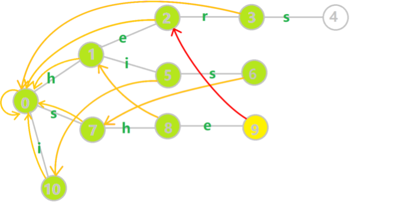

AC自动机
失配指针
AC自动机利用一个 \(fail\) 指针来辅助多模式串的匹配。
状态 \(u\) 的 \(fail\) 指针指向另一个状态 \(v\)，状态 \(u, v\) 都要是字典树中被标记过的节点，且 \(v\) 是 \(u\) 的最长后缀，这里简单对比一下这里的 \(fail\) 指针与 \(KMP\) 中的 \(next\) 指针：
- 共同点：两者同样是在失配的时候用于跳转的指针。
- 不同点：\(next\) 指针求的是最长相同前后缀，而 \(fail\) 指针指向所有模式串的前缀中匹配当前状态的最长后缀。
因为 KMP 只对一个模式串做匹配，而AC自动机要对多个模式串做匹配，所以 fail 指针指向的结点对应着另一个模式串，这个模式串是前一个模式串的最长后缀。
构建指针
考虑字典树中当前的结点 \(u\)，\(u\) 的父结点是 \(p\)，\(p\) 通过字符 \(c\) 的边指向 \(u\)，即 \(trie[p, c] = u\)，假设深度小于 \(u\) 的所有结点的 \(fail\) 指针都已求得。
- 如果 \(trie[fail[p], c]\) 存在：则让 \(u\) 的 \(fail\) 指针指向 \(trie[fail[p], c]\)。
- 如果 \(trie[fail[p], c]\) 不存在：那么我们继续找到 \(trie[fail[fail[p]], c]\)，如果还不存在，继续寻找 \(trie[fail[fail[fail[p]]], c]\)，直到存在这样的一个 \(c\) 或者 \(fail\) 跳到根结点。
- 如果 \(fail\) 跳到了根结点，那就让这个 \(u\) 的 \(fail\) 指针指向根结点，表示没有出现过当前这个子串的后缀。

假设我们按上图开始求结点 \(9\) 的失配指针：
在这里，当前结点 \(u = 9\) 的父结点就是 \(p = 8\)，\(p\) 通过字符 e 的边指向 \(u\)，即 \(trie[p, c] = u\)，且深度小于 \(u\) 的所有结点的 \(fail\) 指针都已求得。
- 如果 \(trie[fail[p], c] = trie[fail[8], 'e'] = trie[1, 'e']\) 存在：则让 \(u\) 的 \(fail\) 指针指向 \(trie[fail[p], c] = trie[1, 'e']\)，显然这里存在，那么有 \(fail[9] = trie[1, 'e'] = 2\)；
- 我们假设结点 \(1\) 到结点 \(2\) 上的字符不是
e，也就是 \(trie[fail[p], c] = trie[fail[8], 'e'] = trie[1, 'e']\) 不存在：继续寻找 \(trie[fail[fail[p]], c] = trie[fail[1], 'e'] = trie[0, 'e']\)，发现还是没有，且现在 \(fail\) 已经在根结点处了，所以进入下一步 \(3\)； - 如果 \(fail\) 跳到了根结点，那就让这个 \(u\) 的 \(fail\) 指针指向根结点；
代码实现
// fail 指针构建过程 void build() { int hh = 0, tt = -1; for (int i = 0; i < 26; ++ i) if (tr[0][i]) { ne[tr[0][i]] = 0; q[ ++ tt] = tr[0][i]; } while (hh <= tt) { int t = q[hh ++ ]; for (int i = 0; i < 26; ++ i) { int c = tr[t][i]; if (!c) continue; int j = ne[t]; while (j && !tr[j][i]) j = ne[j]; if (tr[j][i]) j = tr[j][i]; ne[c] = j; q[ ++ tt] = c; } } }
Trie 图
如果数据叼钻，AC自动机中的第 \(2\) 步可能会跳很多次，Trie图是AC自动机在这步进行的优化。
- 如果 \(trie[fail[p], c]\) 不存在：那么我们直接 \(trie[p, c] = trie[fail[p], c]\)
这样，我们在匹配时也同样不需要 \(fail\) 指针一直跳，相当于少了一层循环，时间复杂度是 \(O(n)\) （AC自动机的时间复杂度也是线性的），优化了一些，代码也更短。
代码：
void build() { int hh = 0, tt = -1; for (int i = 0; i < 26; ++ i) if (tr[0][i]) { ne[tr[0][i]] = 0; q[ ++ tt] = tr[0][i]; } while (hh <= tt) { int t = q[hh ++ ]; for (int i = 0; i < 26; ++ i) { int c = tr[t][i]; if (!c) { tr[t][i] = tr[ne[t]][i]; } else { ne[c] = tr[ne[t]][i]; q[ ++ tt] = c; } } } }